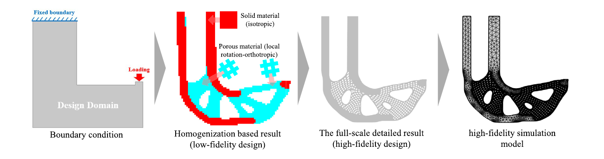
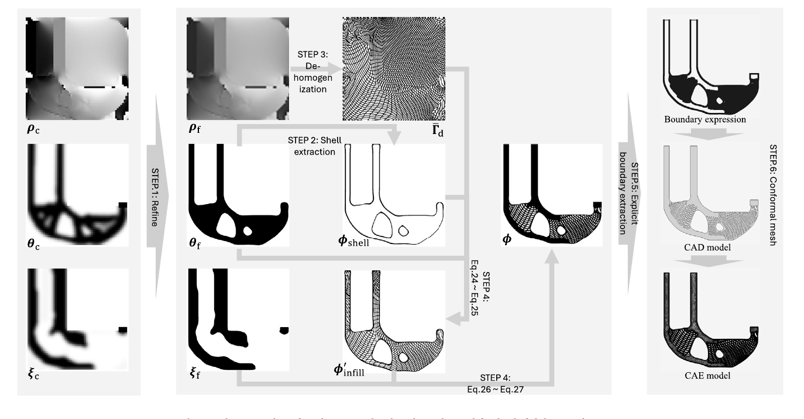
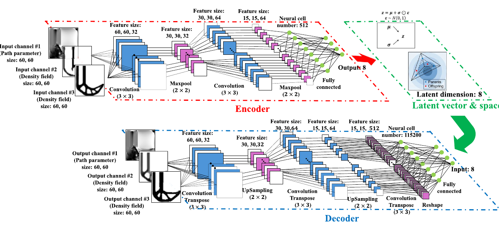
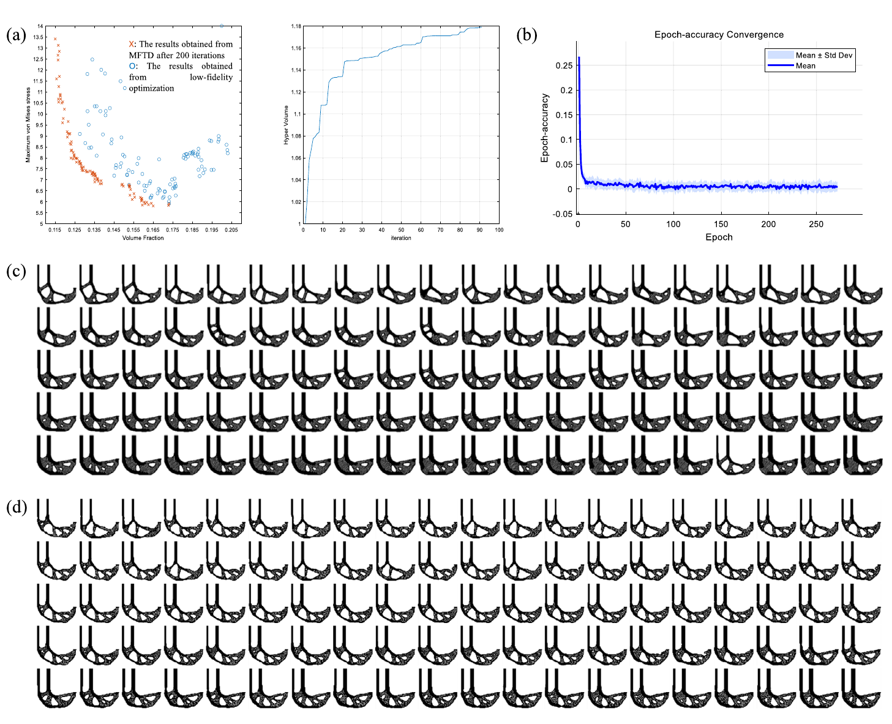
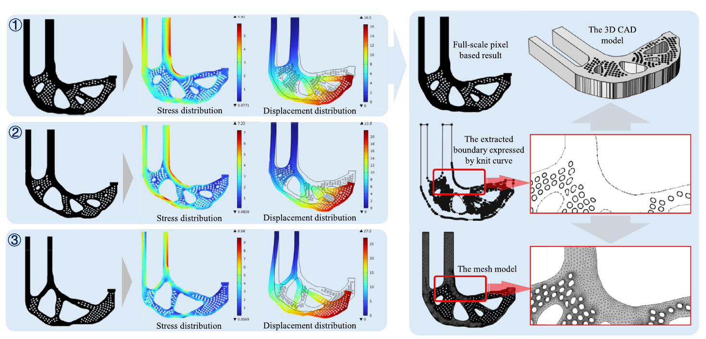
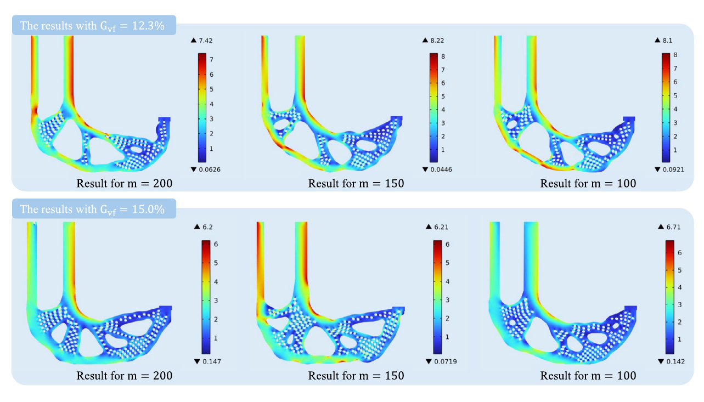
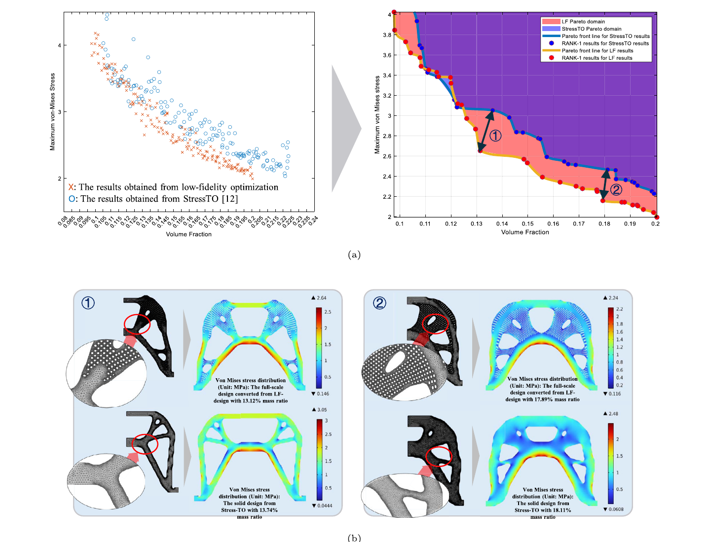
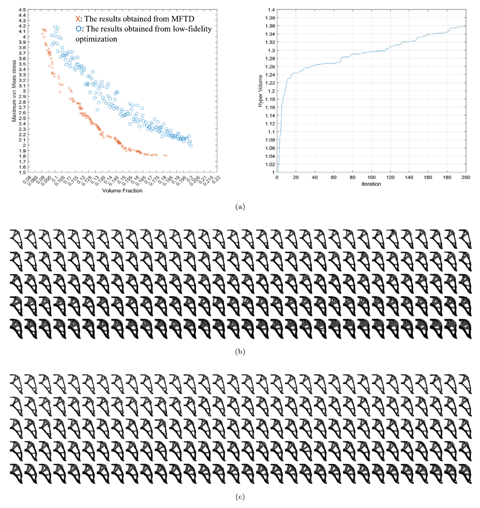
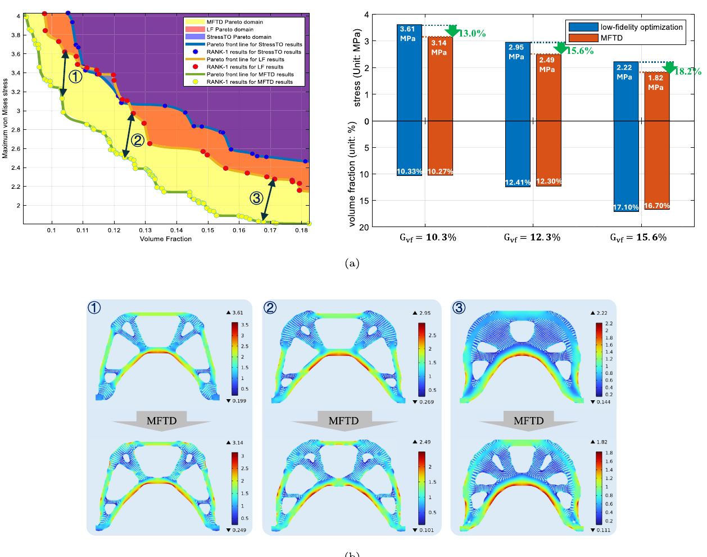

Solid material reinforces critical regions while porous infill preserves lightweight performance.
Materials & Design - 2025
Evolutionary de-homogenization using a generative model for optimizing solid-porous infill structures considering the stress concentration issue
A data-driven multifidelity framework that connects low-fidelity topology variables with precise, CAD-compatible hybrid solid-porous geometries and high-fidelity stress evaluation.
1 Department of Mechanical Engineering, Graduate School of Engineering, The University of Osaka, Japan
* Corresponding author
Abstract
Porous infill structures offer low weight and high mechanical efficiency, but voxel-based topology optimization can introduce geometric mismatch and local stress concentrations when a design is converted into a manufacturable model. This work proposes evolutionary de-homogenization, a data-driven multifidelity framework for hybrid solid-porous infill design. Density-based control fields provide an efficient low-fidelity representation, while de-homogenization maps them to detailed CAD-compatible geometries for adaptive meshing and high-fidelity stress analysis. A multi-objective evolutionary process selects promising candidates, and a multi-channel variational autoencoder generates new designs. The resulting workflow directly optimizes precise solid-porous geometries while concentrating solid material in structurally critical regions.
Compact control fields are mapped to precise CAD and CAE geometries for reliable evaluation.
A multi-channel VAE supports crossover and expands the candidate design population.
High-fidelity analysis guides material toward local stress-concentration regions.
Method
Three low-fidelity fields describe the base material, solid reinforcement, and principal stress direction. The fields are refined and transformed into a shell, spatially oriented lattice infill, and solid domains. Explicit boundaries are then extracted for CAD reconstruction and conformal meshing. High-fidelity mass and maximum von Mises stress define a multi-objective problem solved through NSGA-II, while the VAE learns the selected population and proposes new control-field candidates.

The workflow moves from boundary conditions and a homogenization-based design to a detailed solid-porous geometry and high-fidelity model.

Refined control fields generate the shell, lattice infill, explicit boundary, CAD model, and conformal CAE mesh.

The multi-channel VAE encodes three low-fidelity fields into an eight-dimensional latent space and decodes new candidate designs.
Evolutionary Optimization Results
L-bracket studies evaluate mesh independence, convergence, population size, topology diversity, and detailed stress response. The evolutionary process improves the Pareto population over successive iterations, while larger candidate populations expose additional topologies and reduce the maximum stress at matched volume fractions.

Pareto-front evolution, hypervolume convergence, and the final low- and high-fidelity L-bracket populations.

Representative L-bracket designs include detailed stress and displacement fields, extracted boundaries, CAD reconstruction, and conformal meshes.

Designs produced with 100, 150, and 200 candidates at two target volume fractions show the effect of population size on diversity and stress.
Performance Comparison
Comparisons with conventional stress-based topology optimization and with the low-fidelity-only process show the benefit of evaluating detailed geometries throughout optimization. In the symmetric tension-beam study, MFTD produces more continuous solid-filled regions aligned with the primary load paths and reduces peak stress at closely matched mass ratios.

Low-fidelity solid-porous optimization expands the favorable Pareto region and reduces stress relative to single-material Stress-TO.

The symmetric tension-beam study tracks Pareto improvement, hypervolume convergence, and population evolution over 200 iterations.

MFTD lowers maximum stress while maintaining similar or lower volume fractions across three representative design groups.
Citation
@article{xu2025evolutionary,
title = {Evolutionary de-homogenization using a generative model for
optimizing solid-porous infill structures considering the
stress concentration issue},
author = {Xu, Shuzhi and Kawabe, Hiroki and Yaji, Kentaro},
journal = {Materials & Design},
volume = {257},
pages = {114380},
year = {2025},
doi = {10.1016/j.matdes.2025.114380}
}
Acknowledgements
This work was supported by JSPS KAKENHI Grant Number 23H03799.